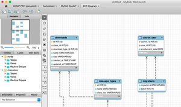

Galería
Conceptos Principales - Base de Datos MYSQL
Componentes de Comunicación

Resolución de Problemas y Pseudocódigo

Grupo de Estudiantes No. 5 - Introducción a los Sistemas de Cómputo
Edad: 20 años
Carrera: Ingeniería en Sistemas
Carnet: 5190-21-11495
Edad: 21 años
Carrera: Ingeniería en Sistemas
Carnet: 5190-15-24013
Edad: 21 años
Carrera: Ingeniería en Sistemas
Carnet: 5190-25-17893
Edad: 18 años
Carrera: Ingeniería en Sistemas
Carnet: 5190-25-11488